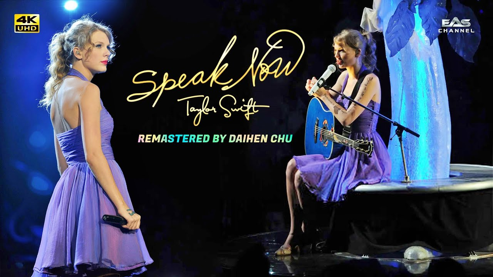

How I rank the albums:
- Fearless (Taylor's Version)
- Folklore
- Red (Taylor's Version)
- Midnights
- Speak Now (Taylor's Version)
- Reputation
- Evermore
- Lover
- 1989
- Taylor Swift (Debut)
Taylor swift Documentaries
Taylor Swift: Journey To Fearless (2010)
Originally airing as a 3-episode special, on what is now known as Discovery Family (before later being released on DVD), this documentary shows both concert footage and also interviews with Swift, her mom Andrea and some of her bandmates.
Taylor Swift: Speak Now World Tour Live (2011).
This documentary is purely a recording of one of her performances on the Speak Now World Tour.
Streaming data
| Album Name | Streams |
|---|---|
| Reputation Stadium Tour Surprise Song Playlist | 8,489,577,517 |
| Lover | 7,565,214,013 |
| 1989 (Deluxe Edition) | 6,935,579,334 |
| Midnights (The Til Dawn Edition) | 6,680,458,440 |
| Reputation | 6,246,888,537 |
| folklore: the long pond studio sessions (from the Disney+ special) [deluxe edition] | 6,048,057,222 |
| Red (Taylor's Version) | 3,839,257,665 |
| evermore (deluxe version) | 3,608,027,511 |
| Red (Deluxe Edition) | 3,156,044,438 |
| Speak Now (Deluxe Package) | 2,971,482,221 |
| Fearless (Taylor's Version) | 2,857,619,152 |
| Fearless | 2,350,859,783 |
| Speak Now (Taylor's Version) | 1,284,323,154 |
| Taylor Swift (Big Machine Radio Release Special) | 1,123,430,864 |
| Total | 63,156,819,851 |
The 1989 Word Tour Live (2015)
Another recording of her tour but this time it includes commentary. The commentary comes from Swift and her friends and one of the highlights of this documentary is when she talks about all of the guests she brought out on stage during the tour's run including Mick Jagger and Alanis Morisette.
Taylor Swift: Reputation Stadium Tour (2018)
A recording of her Reputation Tour concert, still available on Netflix today.
Taylor Swift: City of Lover Concert (February 2020)
This short film is a concert with some accoustic songs and some more ubeat pop songs.
Folklore: The Long Pond Studio Sessions (November 2020)
Mostly a documentaty following a live recording of her album 'folklore', but this documentary also has some scenes of conversations betwen herself and her collaboratorsd on the project Jack Antanoff (of Bleachers) and Aaron Dessner (of Big Red Machine).
Miss Americana (January 2020)
A documentary with no live performances included takes a deeper look on Taylor's life, career, family, politics. This documentary also gets into some heavier and more personal subjects such as Swift's eating disorder and her sexual assault trial in 2017.